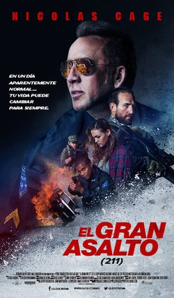

MISS BALA: SIN PIEDAD
Gloria encuentra un poder que nunca creyó que poseía cuando ingresa al peligroso mundo del crimen de frontera. Sobrevivir requerirá de todo su ingenio y fortaleza.

Gloria encuentra un poder que nunca creyó que poseía cuando ingresa al peligroso mundo del crimen de frontera. Sobrevivir requerirá de todo su ingenio y fortaleza.
Inspirada en uno de los eventos más sangrientos de la historia acerca de un robo a un banco. Mike Chandler (Nicolas Cage) es un policía que está a punto de retirarse que junto con su yerno, también policía, Steve MacAvoy (Dwayne Cameron) deben trasladar a la corte a un joven en una misión de rutina. Los dos oficiales y el joven pronto se encuentran en medio de un ambicioso asalto bancario con hombres altamente entrenados y fuertemente armados. Pronto la situación se intensifica poniéndolos en grave peligro.
ALADDÍN, la apasionante adaptación de acción real del clásico animado de Disney de 1992, es la emocionante historia del encantador joven callejero Aladdín, la valiente y decidida Princesa Jasmín y el Genio, que puede ser la clave de su futuro.